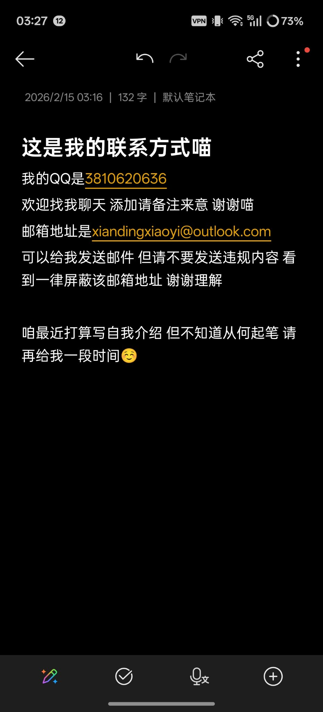

樱川由奈
@Xiaoyi_0324
如果要跟我互fo的话 请给我发送私信或者在评论区评论 我看到就会回的喵

樱川由奈
@Xiaoyi_0324
如果看到这条帖子的你此时此刻心情不好或者急需找人聊天 欢迎来找我倾诉/聊天
联系方式如图
如果你不想让我知道你是谁 可以使用这个链接：https://t.co/iB4YZul5nH
匿名提问链接是：https://t.co/nw891xHAnl
咱也是欢迎给我赞赏喵 但是还是劝劝各位哥哥姐姐还是把钱多多留给自己花吧
大概就是这样喵 https://t.co/rzTKP2rW8J